METAFORA(Carlos Scolari)
Metafora conversacional,caracteristicas:
-
El operador es un técnico especializado.
-
Usuario y software son emisores y receptores.
-
Intercambio de instrucciones y respuestas preprogramadas.
Metafora instrumental:
Surge de la necesidad de masificar el uso del operador no especializado para tareas cotidianas como: buscar, organizar, filtrar, imprimir, etc.
Caracteristicas:
-
El operador es un usuario común no especializado.
-
Visibilidad de la acción através de la herramienta: la comunicación se
hace visual. Manipulación directa de objetos.
-
Control y acciones visibles:tirar, cortar, pegar, borrar, mover, etc.
-
Surge en relación a la idea del instrumento
como extensión de los órganos,el mouse como extensión de la mano,
los parlantes como extensión de los oídos,el monitor como extensión de la vista.
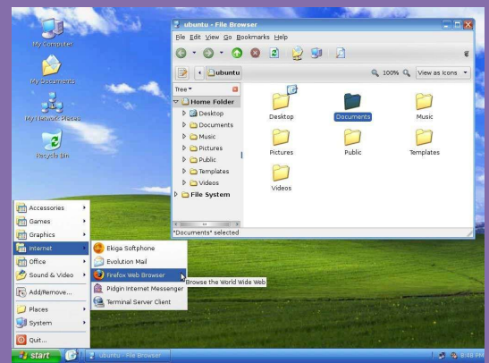
Metafora superficial:
Surge de la necesidad de agilizar los procesos de tareas en los distintos dispositivos.
Caracteristicas:
-
Área sensible de interacción más grande.
-
El usuario realiza sus tareas manipulando la información con sus dedos.
-
Se unifica el diseño en los distintos formatos de pantalla, dispostivos móviles y tecnología smart.
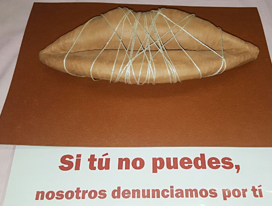
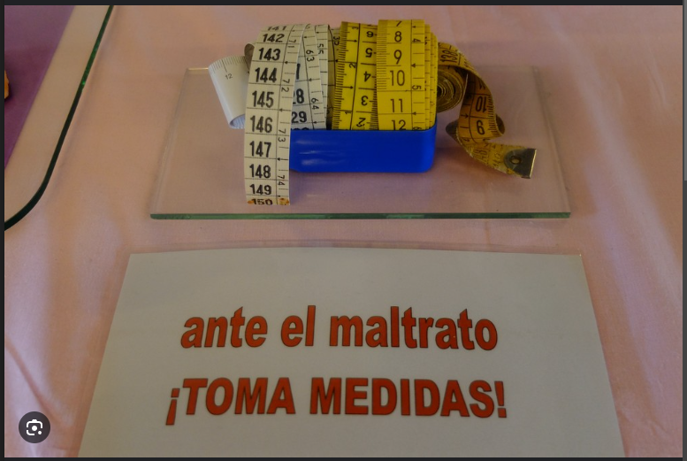
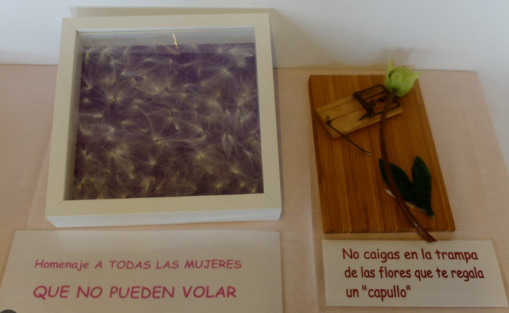
Metafora espacial:
Surge de la necesidad de crear mundos inmersivos y de que el usuario realice sus actividades como si estuviera en un entorno que le resulte familiar.
Caracteristicas:
-
Interacción directa con el espacio físico.
-
El usuario realiza sus tareas con el movimiento de su cuerpo.
-
Relación entre el espacio físico y el entorno simulado.
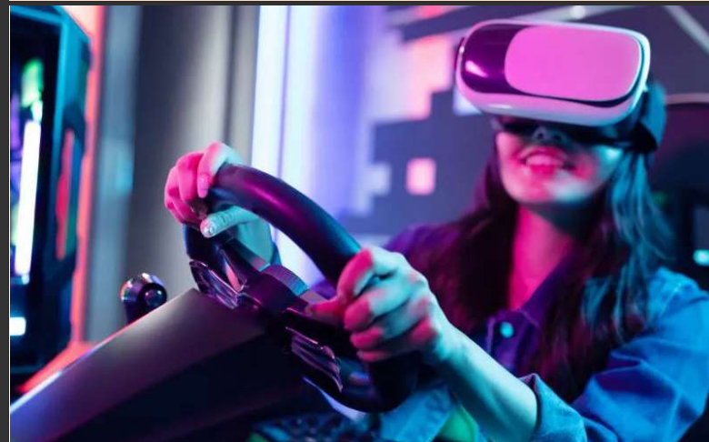
Resumen de las metaforas:

Ejercicio de encontrar tipos de metafora en sitios web
link
RTA:Metafora conversacional: abajo a la izquierda hay un bot que manda mensaje.
Metafora intrumental:cualquier usuario comun puede interactuar con el los botones del header a traves de la flecha para abajo que indica que hay mas informacion.
Metafora superficial: en las imagenes se ven a personas usando distintos dispositivos como computadora de escritorio y notbook lo cual hace que hayan distintos formatos de
pantalla.
link
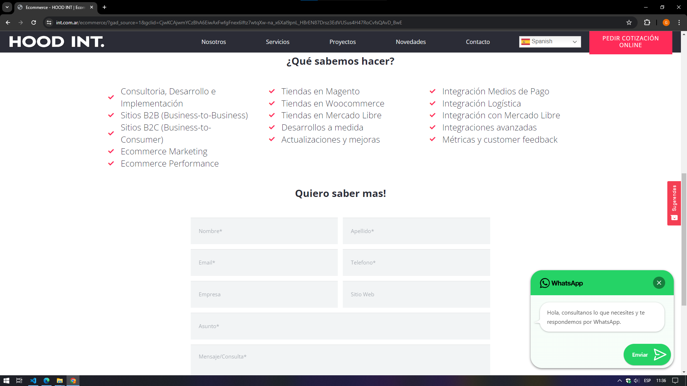
RTA:Metafora conversacional:abajo a la izquierda hay un bot que manda un mensaje haciendo interaccion con el usuario.
Metafora instrumental:Hay una herrienta en el header para filtrar en que idioma quieres ver la pagina
link
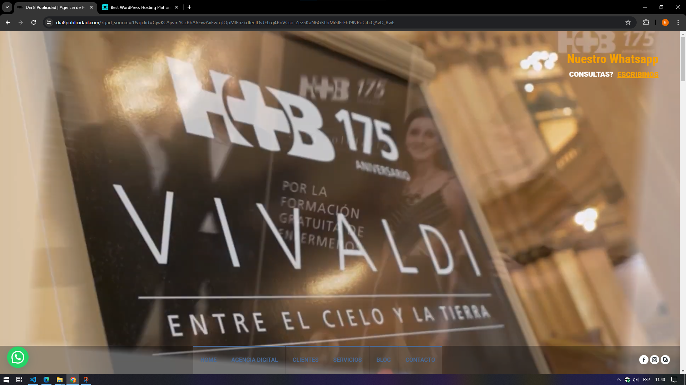
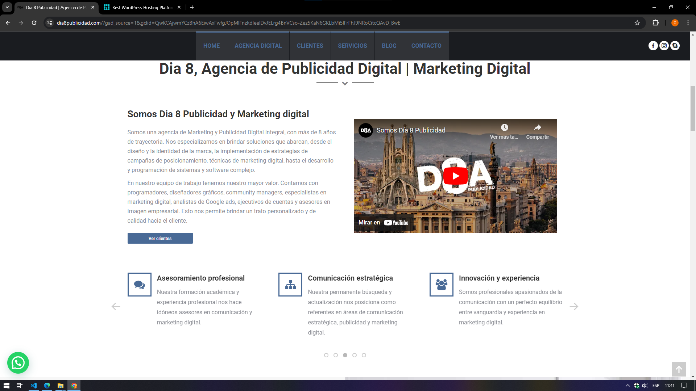
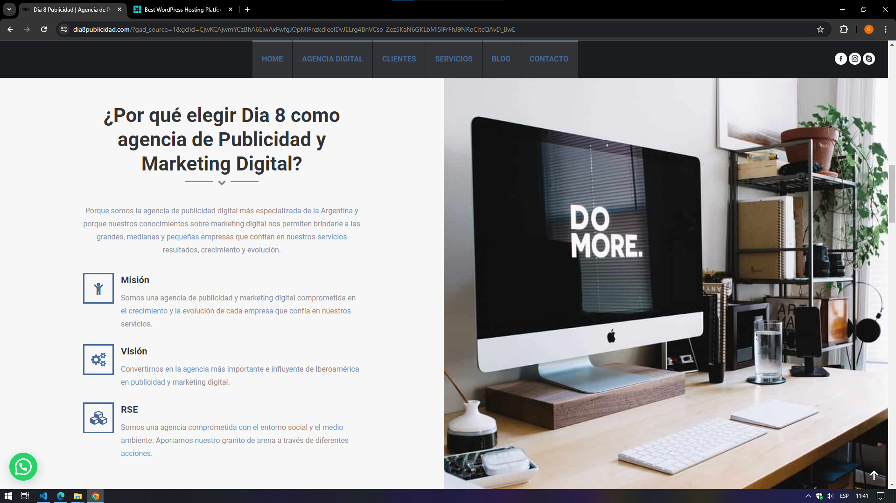
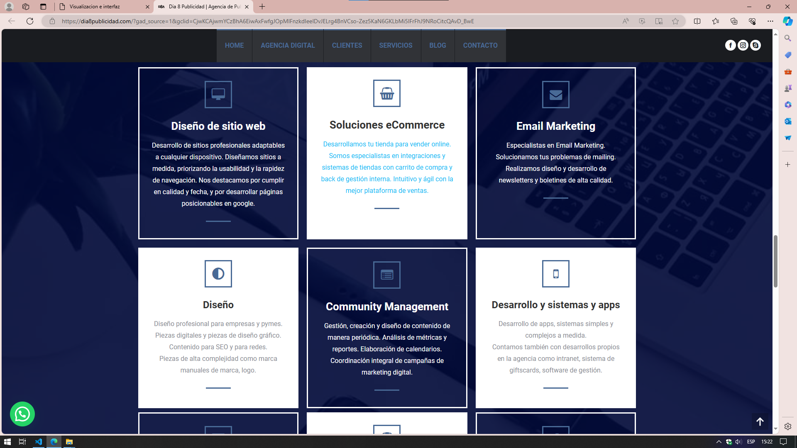
RTA:Metafora superficial: en la pagina hay una imagen en donde hay carter en un espejo en donde el usuario pueder ver a una persona,ademas se puede observar que hay un video en donde la miniatura muestra una ciudad con edificios de la vida real
link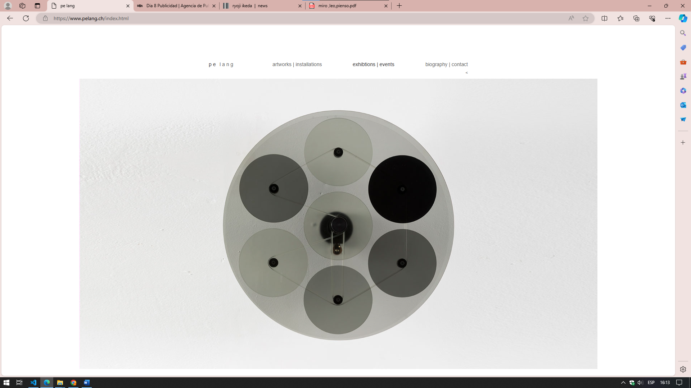
RTA:Metafora intrumental:en el header hay botones en donde el usuario puede interactuar.
link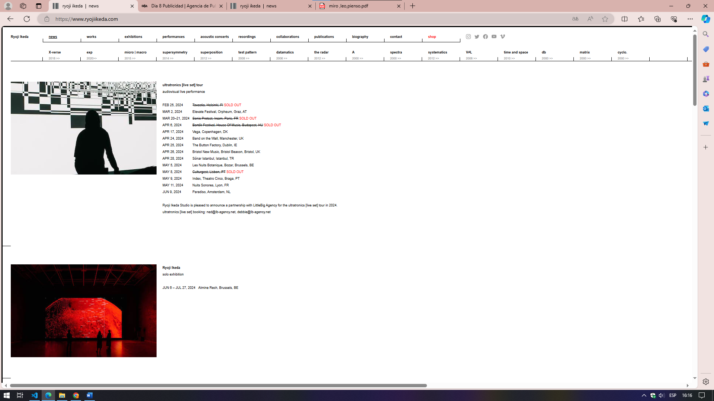
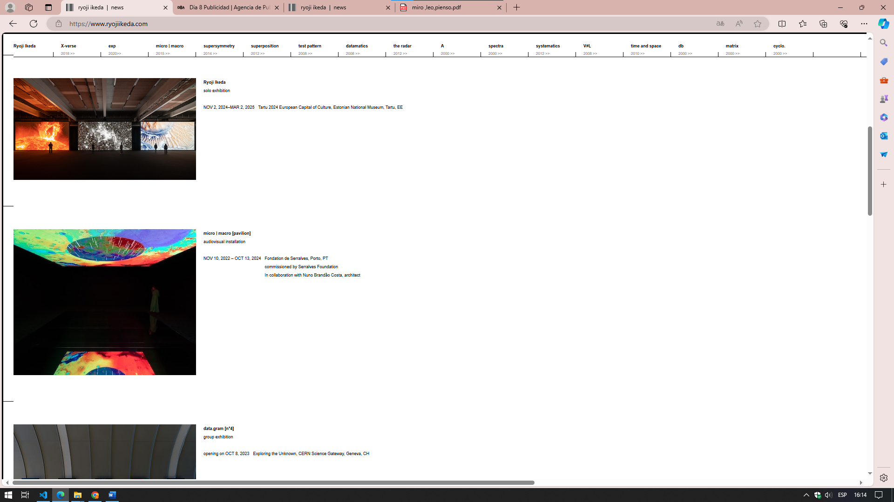
RTA:Metafora superficial: Hay imagenes de la vida real. link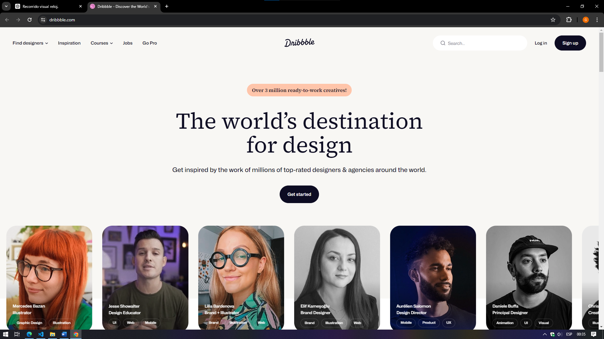
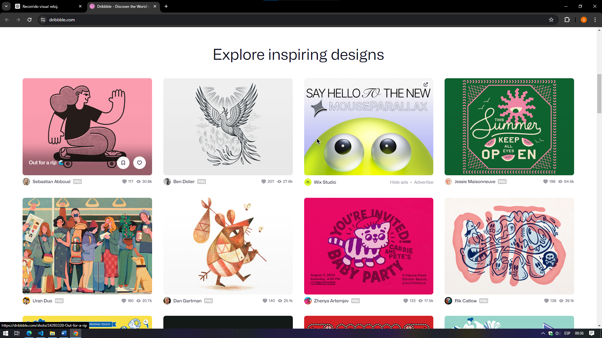
Instrumental:En el sitio web se encuentran herramientas que facilitan el uso de la pagina como la barra para buscar algo en especifico que esta arrbia a la derecha.
Superficial: En el sitio web hay imágenes que se pueden identificar que son de la vida real .
Esta bien pero se puede redactar mejor: • Corrección: Correcto. Las imágenes de la vida real ayudan a conectar el contenido virtual con experiencias y objetos familiares del mundo real.
Espacial: Debajo del titulo hay una serie de imágenes de personas que se desplazan a la izquierda que si te paras con el cursor en algunas de ellas ,hablan como si se quieran comunicar con el usuario.
link
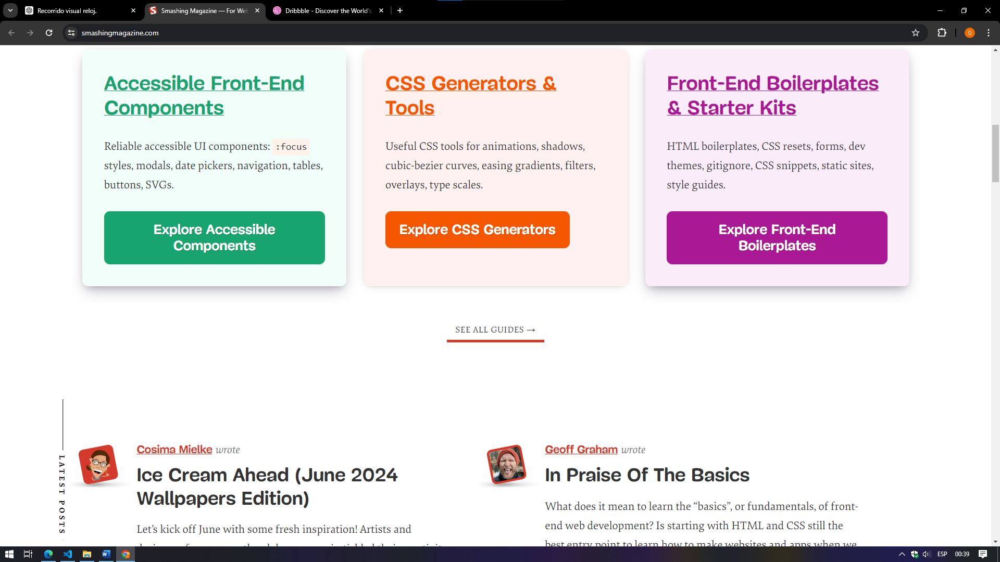